2026 - Present
國立陽明交通大學
傳播與科技學系 碩士（在學中）
About Me
擅長以數據驅動行銷決策，具備數位廣告投放、網站優化與行銷自動化經驗。曾於 RE-THINK 重新思考擔任成長行銷實習生，參與募款專案、網站優化及數位廣告策略，熟悉 Meta Ads、GA4、Microsoft Clarity 等工具，並建立廣告素材資料庫，提升團隊分析與管理效率。
希望持續投入 Growth Marketing、Performance Marketing 或品牌成長相關工作，透過數據分析與策略規劃，協助產品與品牌持續成長。
將資料、工具與協作流程整理成可持續優化的行銷行動。
Education
傳播與科技學系 碩士（在學中）
公共關係暨廣告學系 學士
產學專案中與企業合作，運用 OpView 分析社群輿情、消費者洞察與品牌定位，提出品牌策略規劃。
Experience
參與募款專案、網站優化與數位廣告策略，將廣告成效、使用者行為與團隊營運串成可行動的優化流程。
協助業務企劃團隊整理例行報表並參與提案發想。
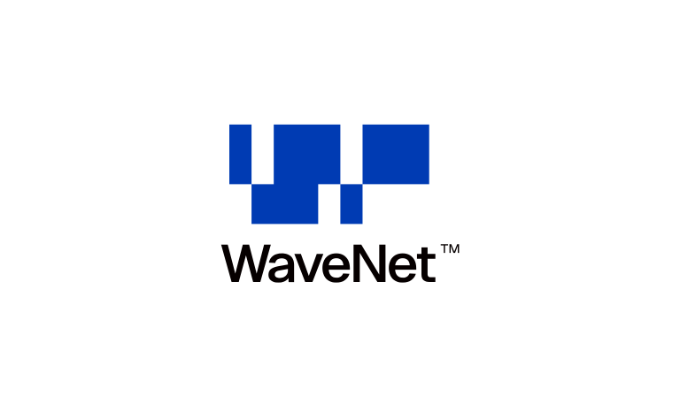
潮網科技｜數位行銷實習生2024.4 - 2025.3參與數位廣告執行與資料整理，累積廣告操作與市場研究概念。
專案作品
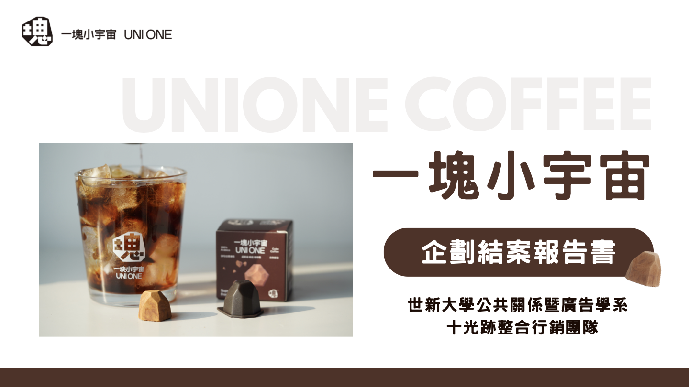
社群企劃
以「咖啡成人式」切入 Z 世代生活情境，規劃 KOC 合作與短影音內容，提升凍乾咖啡的品牌曝光。
KOC 合作 · 短影音 · 社群成效分析閱讀案例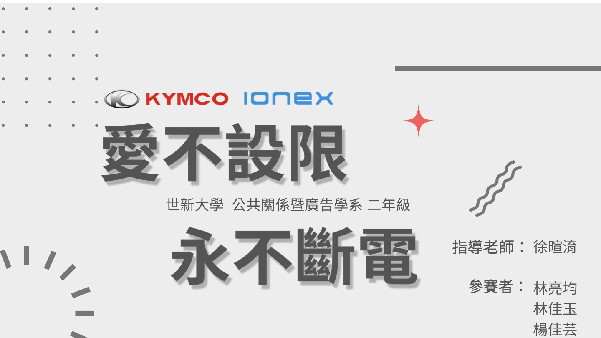
品牌活動提案｜華文公關獎佳作
以復古時裝週試乘會、社群擴散與減碳行動，將電動車轉化為貼近生活的永續品牌體驗。
活動企劃 · KOL 推廣 · 永續溝通閱讀案例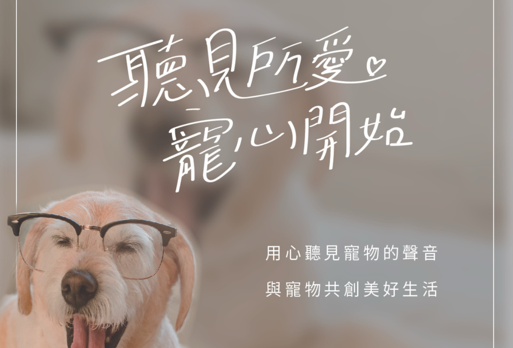
公關提案
從寵物飼主的需求出發，結合行為訓練、健康診斷與寵物友善生活，提出整合溝通企劃。
受眾洞察 · 活動企劃 · 社群推廣閱讀案例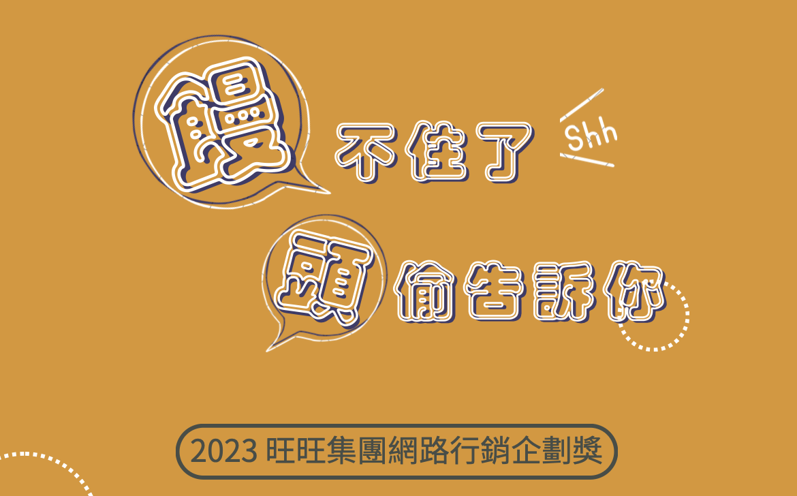
2023 金犢獎｜旺旺集團網路行銷企劃
以健康與快樂為溝通核心，透過社群互動、親子活動與體驗內容，為旺仔小饅頭設計四階段整合行銷企劃。
品牌洞察 · 社群企劃 · KOL 合作 · 活動整合閱讀案例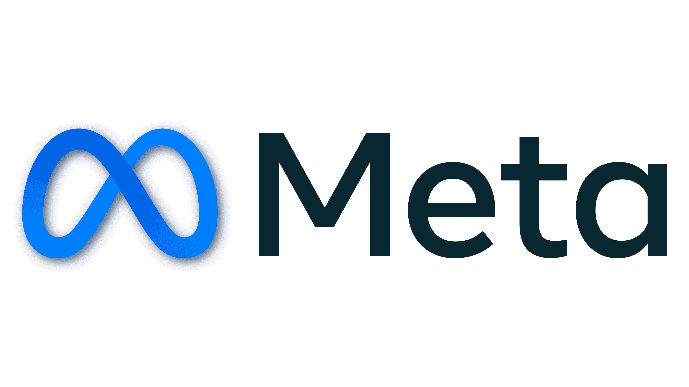
行銷自動化
建立廣告素材資料庫，整合歷史素材、文案角度、受眾與廣告成效，提高素材管理效率，作為廣告優化決策依據。
Google Apps Script · Google Sheets開啟資料庫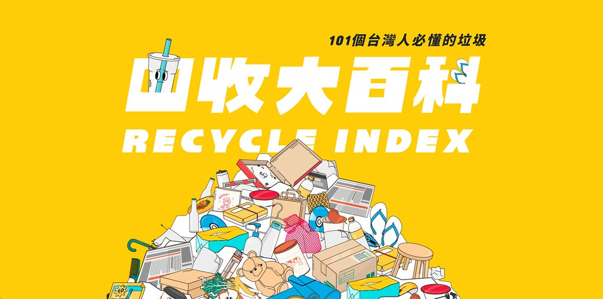
RE-THINK｜網站優化提案
透過 GA4 與 Microsoft Clarity 觀察使用者行為，並參考網站範例與 mentor 討論，整理搜尋、導覽與文章頁功能優化方向。
GA4 · Microsoft Clarity · 網站範例研究閱讀案例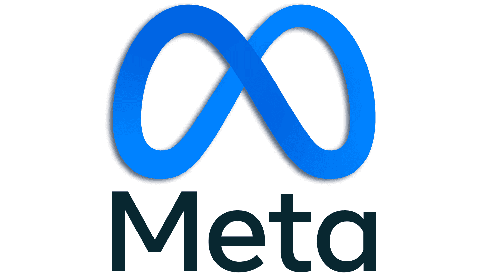
Meta Ads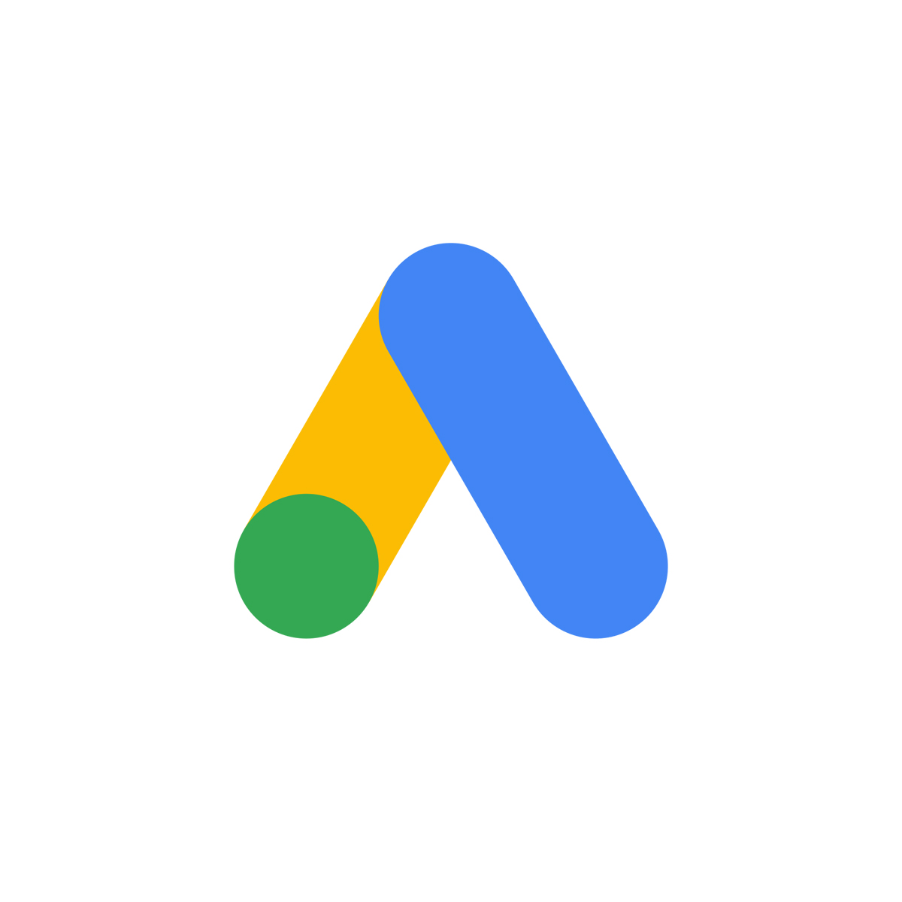
Google Ads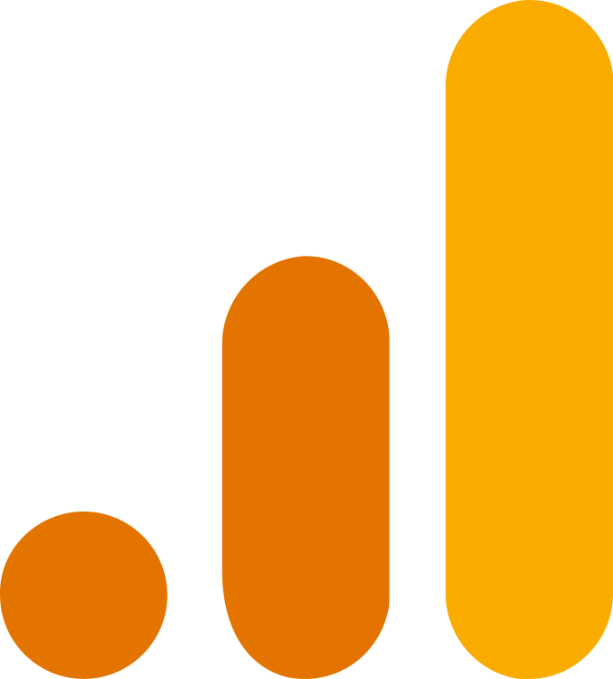
GA4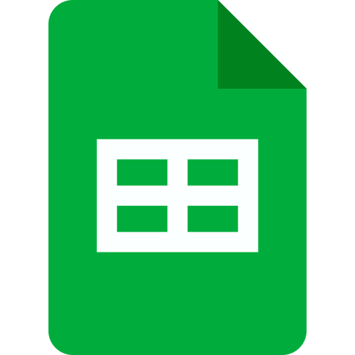
Google Sheets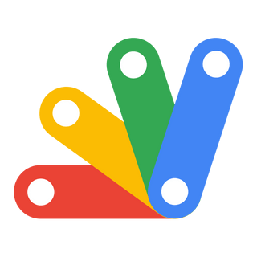
Google Apps Script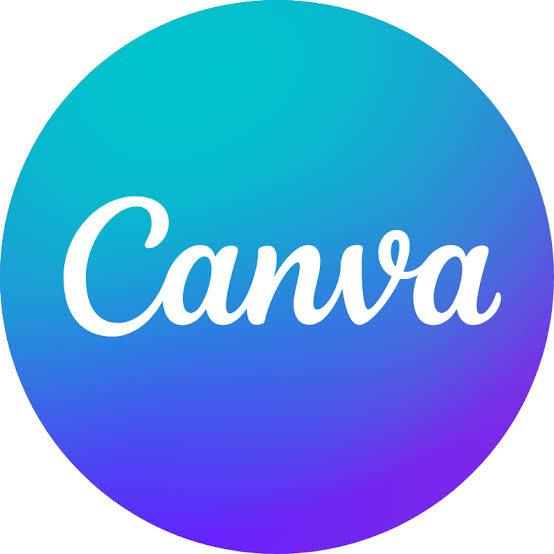
Canva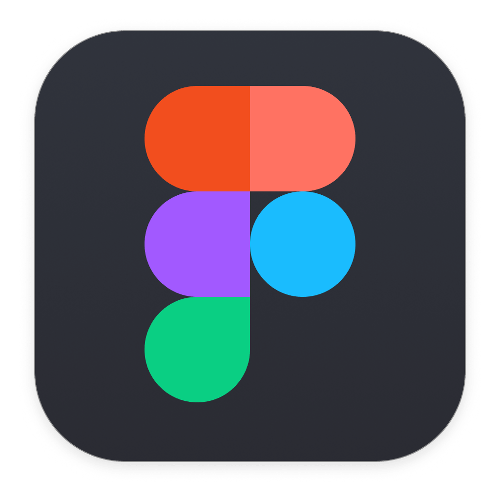
Figma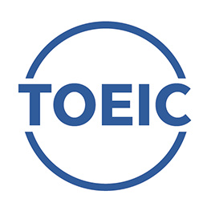
TOEIC 815